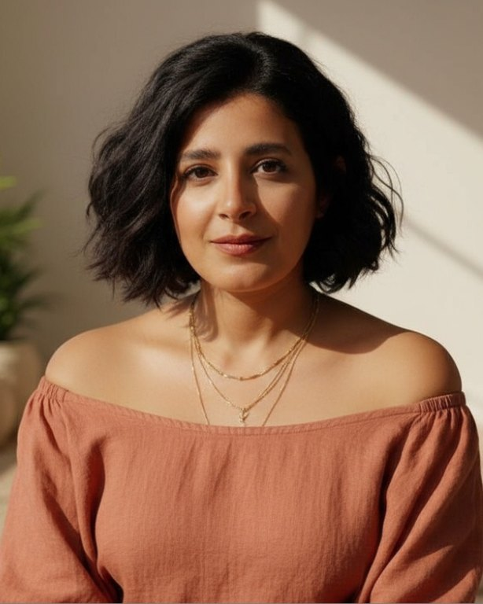
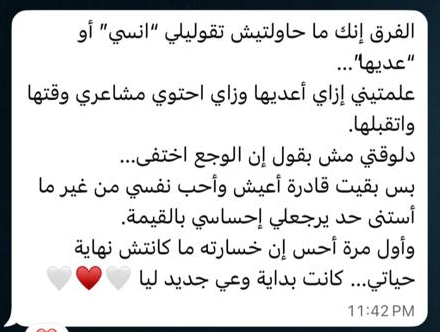
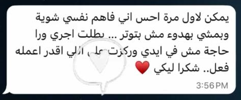
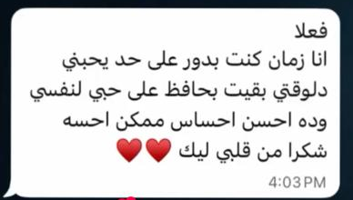
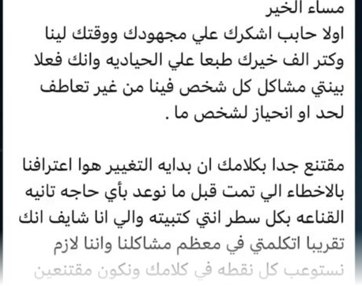

تعافيTAAFI
جورنال الامتنانGRATITUDE JOURNAL
جورنال الامتنان
The Gratitude Journalولو السعادة مش حاجة لازم تدوري عليها… لكن حاجة بتتعلّمي تشوفيها؟ 90 يوم على تلات مراحل.
نورحريةسعادة
السعر هيتأكد قريبشوفي من جوّه
في صوت جواكِ بيقولك «اسمعيني». مش لازم تعرفي جاي منين دلوقتي… كفاية إنك توقفي شوية عشان تسمعيه.

مرض محدش عرف يفسّره، وبعده تجربة قرب من الموت رجّعتلي صوتي. بنيت ثقتي من جديد بالطريقة الوحيدة اللي صمدت: الإيمان الأول، وبعدين الإيمان بنفسي.
أنا مش بصلّح حد. أنا بفكّرك إن الإجابات كانت جواكِ من الأول.
الثقة الحقيقية مش بتتولد من فراغ، ومش بتتعلّم من كورس. هي بتيجي من الإيمان بربنا الأول، وبعدين بنفسك وبقدراتك.
اربطي حقيقتك بإيمانك… والثقة هتيجي لوحدها.
التعب اللي في جسمك، والأفكار اللي مش بتسيبك، والفراغ اللي في روحك… التلاتة مرتبطين ببعض. عشان كده بنشتغل على التلاتة مع بعض.
المكان اللي التوتر بيستقر فيه الأول… ومنه يبدأ الهدوء.
الأنماط اللي شايلاها، ومنين بدأت.
الرسالة اللي جوه الوجع، والوعي اللي بيفتحه.
«السلام والسعادة مش حاجات بنلاقيها في الحياة… هي اللي بنعيشه لما نتعلّم نعيش في تناغم مع نفسنا.»
ابدئي من مكانك. كل خطوة كاملة لوحدها… وكل واحدة بتوصّلك للي بعدها.
أمسية صادقة… آخر أحد في كل شهر. مفيش محاضرات ولا تمثيل. مساحة دافية، كلام صادق، تمارين بسيطة للجسم والعقل، وناس فاهماك.
الريتريت · مارس 2027 · قريبًا
جورنالين من تعافي، بالعربي والإنجليزي، تطبعيهم أو تكتبي فيهم على التابلت. للتأمل والوعي بالنفس — مش علاج.
ولو السعادة مش حاجة لازم تدوري عليها… لكن حاجة بتتعلّمي تشوفيها؟ 90 يوم على تلات مراحل.
افهمي اللي تاقل عليكِ. ارجعي لجذوره. وقابلي البنت الصغيرة اللي جواكِ بحنية. ست أقسام هادية.
قريبًا: كروت «Your Daily Mindset»، ومجات وزجاجات تعافي.
أنا زمان كنت بدور على حد يحبني.. دلوقتي بقيت بحافظ على حبي لنفسي، وده أحسن إحساس ممكن أحسه.
يمكن لأول مرة أحس إني فاهم نفسي شوية، وبمشي بهدوء مش بتوتر.. بطلت أجري ورا حاجة مش في إيدي وركزت على اللي أقدر أعمله فعلًا.
وأول مرة أحس إن خسارته ما كانتش نهاية حياتي… كانت بداية وعي جديد ليا.
مقتنع جدًا بكلامك إن بداية التغيير هو اعترافنا بالأخطاء.
رسايل واتساب حقيقية من عملاء آلاء، متقصوصة على الرسالة نفسها. من غير أسامي ولا صور.
الأربعة في انتظار موافقة أصحابها



الصور متقصوصة من السكرينشوت الأصلي على رسالة العميل بس — من غير شريط الموبايل ولا الستيكرز ولا الردود. ومحتاجة موافقة كل عميل قبل النشر.
كلام صادق بالمصري عن الإيمان والجسد والأنماط، والرسايل اللي جوه الوجع.
طريقتين تدخلي بيهم… الاتنين مجانًا.
تذكيرات هادية، ومواعيد أحد تعافي، وستات ماشيين في نفس الطريق.
انضمي على واتساب لينك الدعوة لسه هيوصل